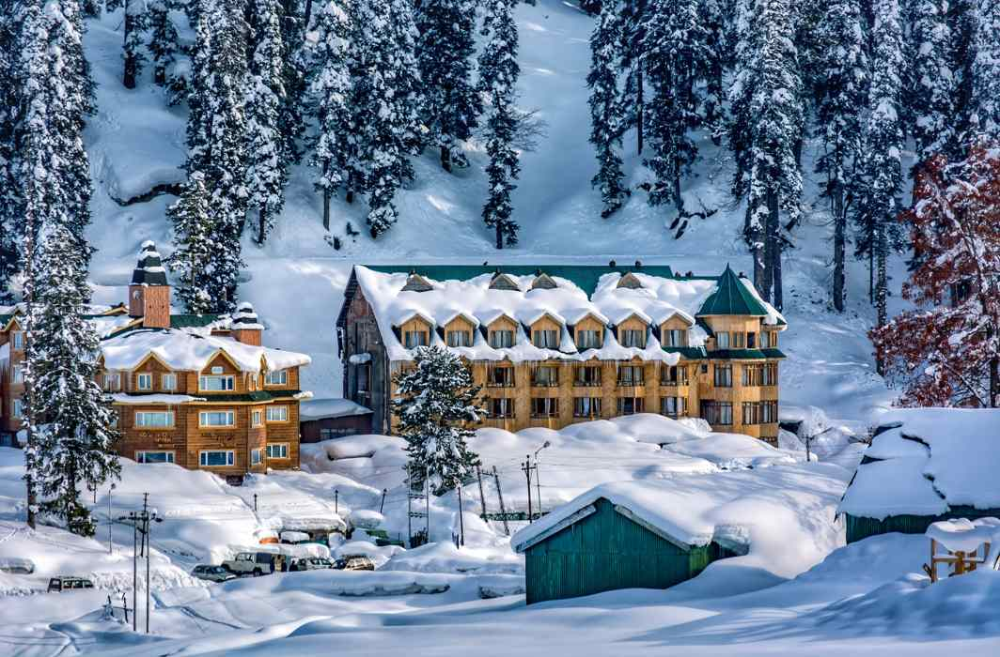

With rolling green meadows carpeted by
bushes of wild flowers blending into
snow-clad mountains, whose peaks peep
into the clouds, and mountain streams
rushing by, Gulmarg is sheer poetry in
nature. While this is the summer
landscape of this tiny hamlet in Jammu
and Kashmir, in winter, it is transformed
into a white wonderland, with skiers
making a beeline for its famous slopes.
The scenic valley of Gulmarg is a little
piece of paradise cocooned by the mighty
snow-clad mountains of the Pir Panjal range.

About Tour
Day 1:
Afarwat
Alpather Frozen Lake
Gulmarg Gondola
St. Mary Church
Gulmarg Wildlife Sanctuary